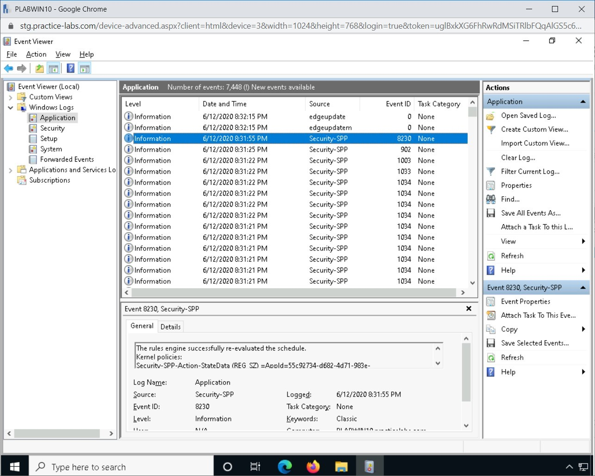
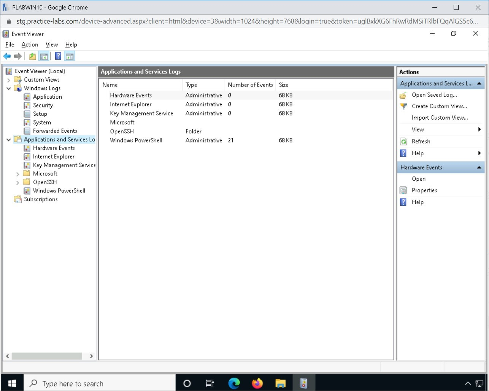

Introduction
9beca326-b493-4b0e-b3dc-d7dfb77df3c9
Welcome to the Log Monitoring and Review Practice Lab. In this module, you will be provided with the instructions and devices needed to develop your hands-on skills.
dc640c20-9434-45ea-b7c2-6d4d6a196bfc
Learning Outcomes
In this module, you will complete the following exercises:
After completing this module, you will be able to:
- Access the Event Viewer Logs
- Review Windows Defender Firewall Logs
- Complete Logging in Linux
- Review SIEM Logs
- Review Syslog Logs
Exam Objectives
The following exam objectives are covered in this lab:
- 3.1 Given a scenario, analyze data as part of security monitoring activities.
Note: Our main
focus is to cover the practical, hands-on aspects of the exam
objectives. We recommend referring to course material or a search engine
to research theoretical topics in more detail.
Lab Duration
It will take approximately 1 hour to complete this lab.
7ca097e1-3b9c-4203-a9a2-3215787353ca
Help and Support
For more information on using Practice Labs, please see our Help and Support page. You can also raise a technical support ticket from this page.
Click Next to view the Lab topology used in this module.
d2c53300-f951-45a9-9aa4-3d4ecae69e11
Lab Topology
During your session, you will have access to the following lab configuration.

Depending on the exercises, you may or may not use all
of the devices, but they are shown here in the layout to get an overall
understanding of the topology of the lab.
- PLABDC01 - (Windows Server 2019 - Domain Server)
- PLABDM01 - (Windows Server 2019 - Domain Member)
- PLABKALI01 - (Kali Linux 2019 - Linux Kali)
- PLABWIN10 - (Windows 10 - Domain Member Workstation)
- PLABCENTOS - (Centos 8 Linux - Stand-alone Linux Server)
- PLABALIENVAULT - (Alien Vault Linux Security Management Platform)
Click Next to proceed to the first exercise.
<
Home |
README >
CompTIA Cybersecurity Analyst (CySA+) Practice Labs
Exercise 1 - Logging
Each application and the operating system generates
various types of events. These events are captured in logs, which are
maintained by a tool or service within an operating system. The logs are
handy in a situation where you need to determine the cause or origin of
an event. Such a requirement may come up in a forensic investigation.
In this exercise, you will learn about various types of logs.
Learning Outcomes
After completing this exercise, you will be able to:
- Access the Event Viewer Logs
- Review Windows Defender Firewall Logs
- Complete Logging in Linux
- Review SIEM Logs
- Review Syslog Logs
Your Devices
You will be using the following devices in this lab. Please power these on now.

- PLABDC01 - (Windows Server 2019 - Domain Server)
- PLABWIN10 - (Windows 10 - Domain Member Workstation)
- PLABALIENVAULT - (Alien Vault Linux Security Management Platform)
Task 1 - Access the Event Viewer Logs
The Event Viewer is a system tool in Windows
that displays information about various events happening on your
computer. This tool can help to track the event flow while
troubleshooting any issues either with the OS or the installed
applications. The Event Log service starts as soon as you start Windows.
There are different types of event logs, such as application logs, system logs, and security logs. Application and System logs are available to all users; however, security logs are available only to the administrators.
In this task, you will access application logs on the system.
Step 1
Ensure that the required devices are powered on. Connect to PLABWIN10. The Windows desktop is displayed.
 Figure 1.1 Screenshot of PLABWIN10: Showing the Windows desktop.
Figure 1.1 Screenshot of PLABWIN10: Showing the Windows desktop.
Step 2
Right-click Start and select Event Viewer.
 Figure 1.2 Screenshot of PLABWIN10: Right-clicking Start and selecting Event Viewer.
Figure 1.2 Screenshot of PLABWIN10: Right-clicking Start and selecting Event Viewer.
Step 3
The Event Viewer console is displayed. There are different types of logs:
- Application: Contains the events that are generated by applications
- Security: Contains security-related events generated by the operating system
- Setup: Contains the application installation-related events
- System: Contains the events generated by the operating system
In the left pane, expand the Windows Logs node, and then select the Application log.
 Figure 1.3 Screenshot of PLABWIN10: Showing the Application logs in the middle pane.
Figure 1.3 Screenshot of PLABWIN10: Showing the Application logs in the middle pane.
Step 4
Notice that various events relevant to the
applications on the system are listed in the middle pane. You can have
events that are labeled as Information, Warning, and Error.
Figure 1.4 Screenshot of PLABWIN10: Showing the Application logs in the middle pane.
Step 5
Click System in the left pane. Notice that there are different types of events listed.
Note: In your lab environment, there may be a possibility that all of these may not be listed.
 Figure 1.5 Screenshot of PLABWIN10: Showing the System logs in the middle pane.
Figure 1.5 Screenshot of PLABWIN10: Showing the System logs in the middle pane.
Step 6
Select an event in the middle pane. If your lab environment displays an error event, select it.
Notice that the bottom section of the middle pane displays the details of the Error event.
Following information related to an event is displayed:
- Date and time
- User
- Computer
- Event ID
- Source
- Type
- Log name
 Figure 1.6 Screenshot of PLABWIN10: Showing the details of a selected event.
Figure 1.6 Screenshot of PLABWIN10: Showing the details of a selected event.
Step 7
Notice that the Windows Logs node displays
different types of logs. It is important to note that these are static
logs on all Windows systems. However, a server with specific services,
such as a DNS server, can have DNS logs as well. Such logs are listed
under the Applications and Services Logs node.
Expand Applications and Services Logs. Notice that these logs are specific to applications.
Figure 1.7 Screenshot of PLABWIN10: Showing the Applications and Services Logs related logs in the middle pane.
Close all open windows.
Task 2 - Windows Defender Firewall Logs
Windows Firewall, by default, does not have logging enabled. You need to enable logging to generate the logs.
In this task, you will learn to work with the Windows Defender Firewall logs.
Step 1
Ensure that the required devices are powered on. Connect to PLABWIN10. The Windows desktop is displayed.
 Figure 1.8 Screenshot of PLABWIN10: Showing the Windows desktop.
Figure 1.8 Screenshot of PLABWIN10: Showing the Windows desktop.
Step 2
If Windows Defender Firewall has logging enabled, its events will be stored in the %windir%\system32\logfiles\firewall\ directory. The default name for the log is pfirewall.log. If this \firewall directory within the logfiles directory does not exist, then it means that logging is not enabled.
To verify the existence of the \firewall directory, right-click Start and then select Run.
Figure 1.9 Screenshot of PLABWIN10: Right-clicking Start and selecting Run.
Step 3
In the Open textbox, type the following path:
%windir%/system32/logfiles
Press Enter.
Note: You can
either use the direct path, which means c:\windows or the drive where
you have installed Windows. Alternatively, you can use the variable,
which is %windir%, which will automatically open the Windows directory,
wherever it is present.
Figure 1.10 Screenshot of PLABWIN10: Entering the path in the Open text box on the Run dialog box.
Step 4
Notice that the Firewall directory does not exist. Close the File Explorer window.
Figure 1.11 Screenshot of PLABWIN10: Showing the directories within the LogFiles directory.
Step 5
In the Type here to search textbox, type the following:
Windows Firewall
From the search results, select the Windows Defender Firewall.
 Figure 1.12 Screenshot of PLABWIN10: Selecting Windows Defender Firewall from the search results.
Figure 1.12 Screenshot of PLABWIN10: Selecting Windows Defender Firewall from the search results.
Step 6
In the left pane of the Windows Defender Firewall window, click Advanced settings.
 Figure 1.13 Screenshot of PLABWIN10: Clicking Advanced Settings in the Windows Defender Firewall window.
Figure 1.13 Screenshot of PLABWIN10: Clicking Advanced Settings in the Windows Defender Firewall window.
Step 7
The Windows Defender Firewall with Advanced Security window is displayed. In the right pane, Actions, click Properties.
Figure 1.14 Screenshot of PLABWIN10: Clicking Properties in the Actions pane.
Step 8
The Windows Defender Firewall with Advanced Security on Local Computer dialog box is displayed. By default, the Domain Profile tab is opened. In the Logging section, click Customize.
 Figure
1.15 Screenshot of PLABWIN10: Clicking Customize on the Windows
Defender Firewall with Advanced Security on Local Computer dialog box.
Figure
1.15 Screenshot of PLABWIN10: Clicking Customize on the Windows
Defender Firewall with Advanced Security on Local Computer dialog box.
Step 9
The Customize Logging Settings for the Domain Profile dialog box is displayed. In the Log dropped packets drop-down, select Yes.
Figure 1.16 Screenshot of PLABWIN10: Selecting Yes from the Log dropped packets drop-down list.
Step 10
In the Log successful connections drop-down, select Yes and click OK.
 Figure 1.17 Screenshot of PLABWIN10: Selecting Yes from the Log successful connections drop-down list and clicking OK.
Figure 1.17 Screenshot of PLABWIN10: Selecting Yes from the Log successful connections drop-down list and clicking OK.
Step 11
Click OK to close the Windows Defender Firewall with Advanced Security on Local Computer.
 Figure
1.18 Screenshot of PLABWIN10: Clicking OK to close the Windows Defender
Firewall with Advanced Security on Local Computer.
Figure
1.18 Screenshot of PLABWIN10: Clicking OK to close the Windows Defender
Firewall with Advanced Security on Local Computer.
Step 12
Close the Windows Defender Firewall with Advanced Security window.
Figure 1.19 Screenshot of PLABWIN10: Closing the Windows Defender Firewall with Advanced Security window.
Step 13
Close the Windows Defender Firewall window.
 Figure 1.20 Screenshot of PLABWIN10: Closing the Windows Defender Firewall window.
Figure 1.20 Screenshot of PLABWIN10: Closing the Windows Defender Firewall window.
Step 14
In the Type here to search textbox, type the following:
Notepad
From the given search results, right-click Notepad and select Run as administrator.
 Figure 1.21 Screenshot of PLABWIN10: Right-clicking Notepad and selecting Run as administrator from the context menu.
Figure 1.21 Screenshot of PLABWIN10: Right-clicking Notepad and selecting Run as administrator from the context menu.
Step 15
In the User Account Control dialog box, click Yes.
Figure 1.22 Screenshot of PLABWIN10: Clicking Yes in the User Account Control dialog box.
Step 16
The Untitled - Notepad window is displayed. Click File and then select Open.
 Figure 1.23 Screenshot of PLABWIN10: Clicking File and then selecting Open in the Notepad window.
Figure 1.23 Screenshot of PLABWIN10: Clicking File and then selecting Open in the Notepad window.
Step 17
In the Open dialog box, navigate to the following path:
C:\Windows\System32\LogFiles
Notice that there is a Firewall directory that is created. Select the Firewall directory and click Open.
 Figure 1.24 Screenshot of PLABWIN10: Selecting the Firewall directory and clicking Open.
Figure 1.24 Screenshot of PLABWIN10: Selecting the Firewall directory and clicking Open.
Step 18
Ensure that you select All Files from the drop-down next to File name textbox. Select pfirewall and click Open.
 Figure
1.25 Screenshot of PLABWIN10: Ensuring All Files is selected from the
drop-down next to the File name textbox. Selecting pfirewall and
clicking Open.
Figure
1.25 Screenshot of PLABWIN10: Ensuring All Files is selected from the
drop-down next to the File name textbox. Selecting pfirewall and
clicking Open.
Step 19
Notice that the pfirewall log file is now opened. It shows various events handled by the Windows Defender Firewall.
 Figure 1.26 Screenshot of PLABWIN10: Showing the events handled by the Windows Defender Firewall.
Figure 1.26 Screenshot of PLABWIN10: Showing the events handled by the Windows Defender Firewall.
Close all open windows.
Task 3 - Logging in Linux
Logs are meant for recording events in a system. In
the case of an event, you can refer to the respective log for more
details. Logs are saved in the /var/log directory. It is important to
note that the number of logs in each system will differ because of the
installed applications.
For example, if a system has MySQL installed, this
directory will have a log about the MySQL application. On the other
hand, a system that does not have MySQL will not have this log
generated.
To test the Apache Web Server Traffic, perform the following steps:
Step 1
Ensure that the required devices are powered on. Connect to PLABCENTOS. The CentOS desktop is displayed.
Click Activities.
Figure 1.27 Screenshot of PLABCENTOS: Clicking Activities on the desktop.
Step 2
From the application bar, click the Terminal icon.
Figure 1.28 Screenshot of PLABCENTOS: Clicking the Terminal icon in the application bar.
Step 3
The Terminal window is displayed.
Let’s first list the number of logs in the /var/log directory. Type the following command:
ls -l /var/log/
Press Enter.
Figure 1.29 Screenshot of PLABCENTOS: Showing the contents of the /var/log directory.
Step 4
The list of log files is displayed.
Figure 1.30 Screenshot of PLABCENTOS: Listing the number of logs in the /var/log directory.
Step 5
Clear the screen by entering the following command:
clear
To view a log file, you can use the cat command. Type the following command:
sudo cat /var/log/vmware-vmusr.log
Press Enter.
Figure 1.31 Screenshot of PLABCENTOS: Using the cat command to view the contents of a log file.
Step 6
When prompted for a password, type the following:
Passw0rd
Press Enter.
Figure 1.32 Screenshot of PLABCENTOS: Entering the password for the sudo command.
Step 7
The entries in the log files are displayed.
Figure 1.33 Screenshot of PLABCENTOS: Showing the entries in a log file using the cat command.
Task 4 - SIEM Logs
Alien Vault OSSIM is a multiple package security
applications. It can help you deploy the Host Intrusion Detection System
(HIDS) and then monitor the devices from its built-in SIEM tool.
In this task, you will view the SIEM logs after
deploying HIDS on a client system. To view the SIEM logs in AlienVault
OSSIM, perform the following steps:
Step 1
Ensure that the required devices are powered on. Connect to PLABWIN10. The Windows desktop is displayed. Click the Firefox icon in the taskbar.
 Figure 1.34 Screenshot of PLABWIN10: Clicking the Firefox icon in the taskbar.
Figure 1.34 Screenshot of PLABWIN10: Clicking the Firefox icon in the taskbar.
Step 2
In the address bar, type the following URL:
https://192.168.0.6
Press Enter.
 Figure 1.35 Screenshot of PLABWIN10: Entering a URL in the address bar.
Figure 1.35 Screenshot of PLABWIN10: Entering a URL in the address bar.
Step 3
The login page for ALIEN VAULT OSSIM is displayed. In the USERNAME text box, type the following:
admin
In the PASSWORD text box, type the following:
Passw0rd
Click LOGIN.
 Figure 1.36 Screenshot of PLABWIN10: Entering the user credentials on the ALIEN VAULT OSSIM login window.
Figure 1.36 Screenshot of PLABWIN10: Entering the user credentials on the ALIEN VAULT OSSIM login window.
Step 4
The Alien Vault Dashboard is displayed. Click the ENVIRONMENT tab and select DETECTION.
Figure 1.37 Screenshot of PLABWIN10: Clicking the ENVIRONMENT tab and selecting DETECTION.
Step 5
On the DETECTION page. Click AGENTS.
Figure 1.38 Screenshot of PLABWIN10: Clicking AGENTS on the DETECTION page.
Step 6
Click ADD AGENT.
Figure 1.39 Screenshot of PLABWIN10: Clicking ADD AGENT.
Step 7
In the NEW HIDS AGENT dialog box, in the Search by IP address or name text box, type the following:
192.168.0.1
Then, select 192.168.0.1 from the search results.
Figure 1.40 Screenshot of PLABWIN10: Entering an IP address in the search box and then selecting from the search results.
Step 8
Click SAVE.
Figure 1.41 Screenshot of PLABWIN10: Clicking Save to save the configuration related to the IP address.
Step 9
A green-colored notification appears that HIDS agent has been created. Close this notification.
Figure 1.42 Screenshot of PLABWIN10: Showing the creation of the HIDS agent in the green notification.
Step 10
The next step is to deploy the HIDS agent. You can
either deploy it manually by creating the HIDS agent installer or deploy
it automatically. In this task, you will deploy it automatically.
Click the Automatic HIDS deployment for Windows icon. It is the icon at the extreme right for 192.168.0.1.
Figure 1.43 Screenshot of PLABWIN10: Clicking the Automatic HIDS deployment for Windows icon.
Step 11
The AUTOMATIC DEPLOYMENT FOR WINDOWS dialog box is displayed. You need to fill the following text boxes:
DOMAIN:
practicelabs.com
USER:
Administrator
PASSWORD:
Passw0rd
Click DEPLOY.
Figure
1.44 Screenshot of PLABWIN10: Entering the details in the AUTOMATIC
DEPLOYMENT FOR WINDOWS dialog box and clicking DEPLOY.
Step 12
The Deploying HIDS agent message appears.
Note: The automatic deployment takes a few minutes to deploy.
Figure 1.45 Screenshot of PLABWIN10: Showing the Deploying HIDS agent.
Step 13
After the HIDS agent is deployed, a notification appears.
Close this notification.
Figure 1.46 Screenshot of PLABWIN10: Showing a notification stating that the HIDS agent has been deployed.
Step 14
Click the HIDS CONTROL tab.
Figure 1.47 Screenshot of PLABWIN10: Clicking the HIDS CONTROL tab.
Step 15
Click RESTART.
Figure 1.48 Screenshot of PLABWIN10: Clicking RESTART.
Step 16
The Processing action notification appears.
Figure 1.49 Screenshot of PLABWIN10: Showing the notification stating Processing action.
Step 17
After HIDS services are up, you get the message in green color.
 Figure 1.50 Screenshot of PLABWIN10: Showing the messages related to services up and running.
Figure 1.50 Screenshot of PLABWIN10: Showing the messages related to services up and running.
Step 18
Hover over ANALYSIS and then select SECURITY EVENTS (SIEM).
 Figure 1.51 Screenshot of PLABWIN10: Hovering over ANALYSIS and then selecting SECURITY EVENTS (SIEM).
Figure 1.51 Screenshot of PLABWIN10: Hovering over ANALYSIS and then selecting SECURITY EVENTS (SIEM).
Step 19
On the SECURITY EVENTS (SIEM) page, select AlientVault HIDS from the DATA SOURCES drop-down.
Notice that it gets added to the text box below.
Figure 1.52 Screenshot of PLABWIN10: Selecting AlientVault HIDS from the DATA SOURCES drop-down.
Step 20
Scroll down and notice that there are events that are captured from 192.168.0.1. SIEM has been able to register events from HIDS that were deployed on 192.168.0.1.
Figure 1.53 Screenshot of PLABWIN10: Showing the captured events from 192.168.0.1.
92fea127-9ca7-4825-8147-63c3d2f6f0d4
Syslog Logs
Syslog is short for System Logging Protocol. Syslog is a protocol that is responsible for sending events from one or more systems to a single server, which is known as Syslog Server.
There are typically three key components:
- Syslog Forwarder
- Syslog Collector
- Syslog Analysis
86b3caf2-2504-4e20-a81b-2fcb2368c8d2
Keep all devices that you have powered on in their current state and proceed to the review section.
Review
Well done, you have completed the Log Monitoring and Review Practice Lab.
2abaca70-efa1-4fe5-94fb-ad1777bfc242
941891aa-6848-4a2c-8196-72b57650ff05
3db30834-2c6f-4414-a81d-6dbb99d155ba
d99b5752-b1a4-4514-9aab-6c5debe4c165
2d78f847-c15c-4f27-a29f-b70f2c8c5b2a
a99534c8-a23c-478b-a1f1-3dfcef13c93e
aaaaaaaa-1111-1111-1111-193f35a24fe3
Summary
You completed the following exercises:
You should now be able to:
- Access the Event Viewer Logs
- Review Windows Defender Firewall Logs
- Complete Logging in Linux
- Review SIEM Logs
- Review Syslog Logs
Feedback
067744a4-4299-4662-b5be-04dbb636a007
Shutdown all virtual machines used in this lab. Alternatively, you can log out of the lab platform.